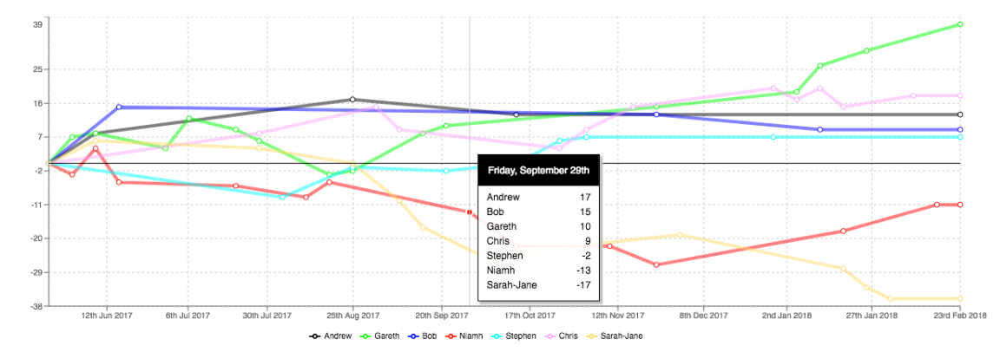

<h1>What does a graph look like?</h1>

This one has some custom CSS applied to it:


<style>

    .live-example .data-editor {

        display: flex;

    }
    .live-example .data-editor textarea {

        flex: 1;
        min-height: 300px;
        margin: 10px;
        
    }

</style>
<article id="live-example">
</article>

<script src="./live-example.js"></script>
<script src="./main.js"></script>